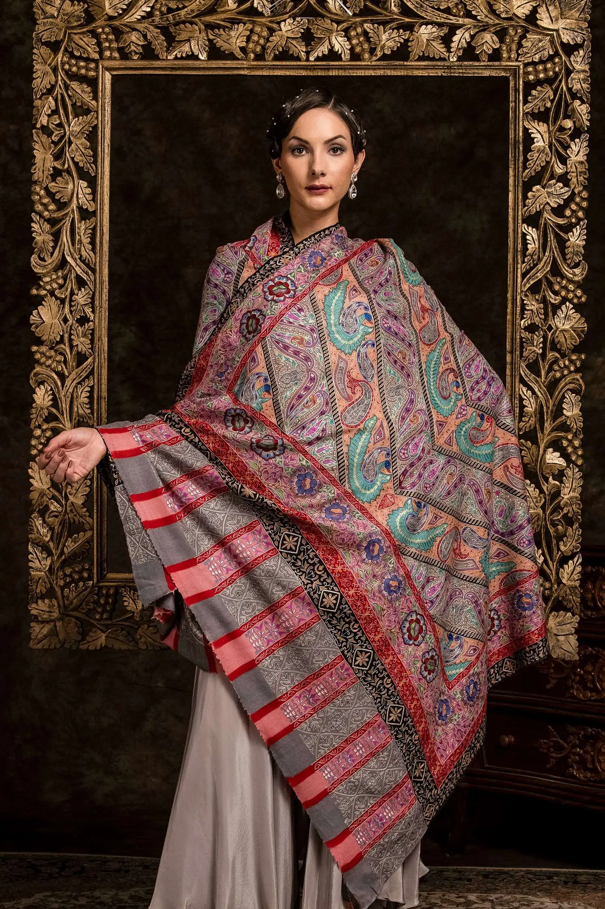
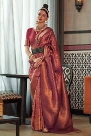
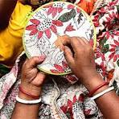
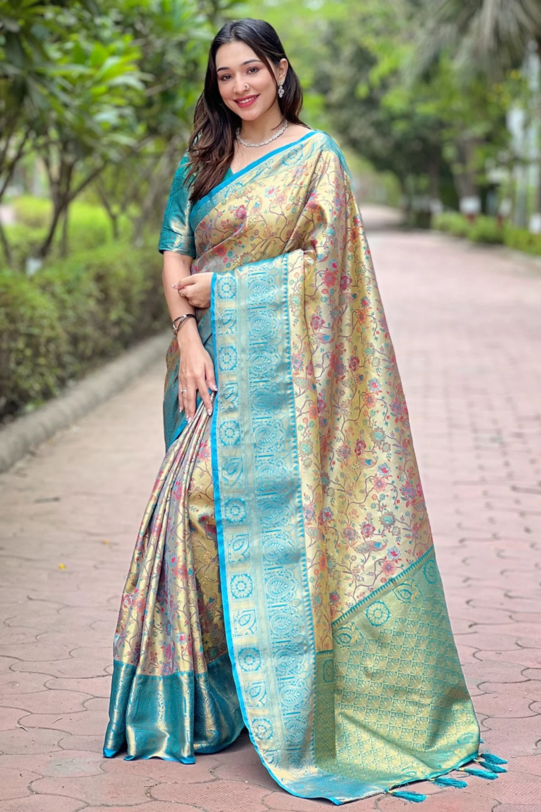
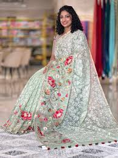

PASHMINA
Rs 12000
The shawls are handcrafted, often with intricate designs and patterns, and are a symbol of elegance and heritage, particularly in Kashmir.

CHIKANKARI
Rs 7500
It involves delicate and intricate white threadwork on fine muslin or other fabrics, creating intricate patterns and designs.

KANJIVARAM
Rs 10000
Kanjivaram sarees are renowned for their South Indian origin and are made from pure mulberry silk, known for its heavy and lustrous texture.

KANTHA
Rs 11000
The traditional folk art was popular in Bengal and has been especially used in quilting since its early days.

Banarasi Saree
Rs 14000
Banaras Zardozi embroidery uses gold and silver threads, and precious stones to embellish fabrics.

JAMDANI
Rs 8200
Jamdani is a hand-woven fabric known for its intricate designs and use of fine muslin.